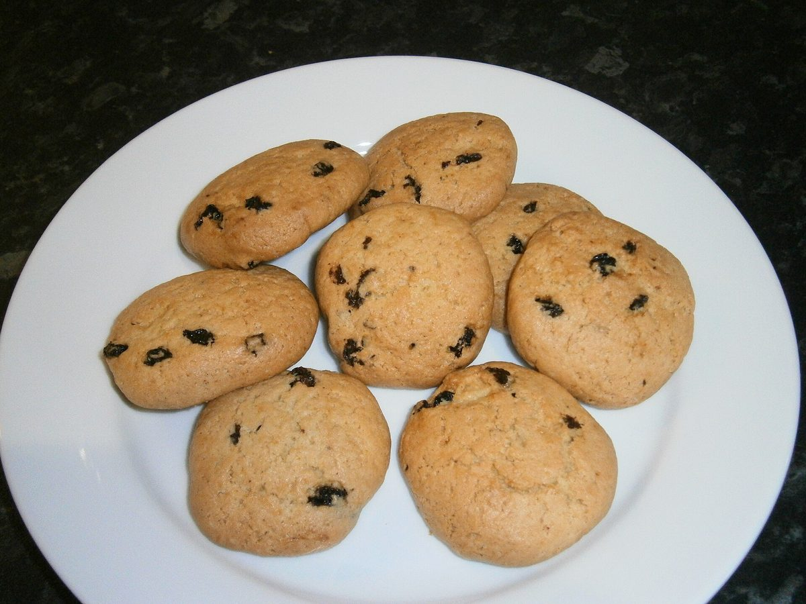
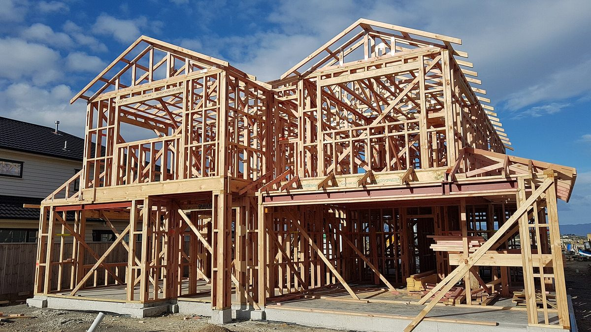

⊆

Trinity College Dublin
Coláiste na Tríonóide, Baile Átha Cliath
The University of Dublin
LIU33008 · Semantics II
Week 10
Aspect & the Perfect
Dr. Thomas Stephen
School of Linguistic, Speech & Communication Sciences
Semester 1 · Michaelmas
This week
What it is for an event to be in progress
Tense places the time a sentence is about before, at or after the time of speaking. Aspect relates the time of the event to the time the sentence is about.
A progressive can be true of an event that is never completed, so its meaning refers to worlds where the event goes on. A perfect places an event inside an interval that reaches up to the time the sentence is about.
Figures: Vendler · Dowty · Landman · Klein · Portner
Concepts and skills
Concepts
- Topic time, event time and speech time; perfective, imperfective and progressive.
- The imperfective paradox.
- Inertia worlds.
- The progressive as a modal; a circumstantial modal base and a non-interruption ordering source.
- Readings of the perfect; the present perfect puzzle; lifetime effects.
- Non-culminating accomplishments; the after-perfect.
Skills
- Place topic time, event time and speech time on a timeline.
- Give the truth conditions of a sentence with an aspect head from its tree.
- Decide whether a progressive entails its simple past.
- Compute the best worlds for a progressive from a modal base and an ordering source.
- Classify a perfect by its reading.
- Test glossed data for a culmination entailment.
Today
Empirical
- Viewpoint aspect
- The imperfective paradox
- Interrupted events
- The present perfect puzzle
- Readings of the perfect
- Lifetime effects
Historical
- Vendler
- Dowty
- Reichenbach
Typological
- Perfective and imperfective
- The perfect
- Culmination
- Irish English perfects
Formal
- Aspect in the tree
- Mary made tea
- IPFV and the paradox
- The progressive as a modal
- The entry for PROG
- Crossing the street
- John was drawing a circle
- Resolving the paradox
- Events under descriptions
- Incomplete objects
- Other notations
This week
Readings
Kroeger (2022), Analyzing Meaning, 3rd ed., ch. 20 “Aspect and Aktionsart” and ch. 22 “Varieties of the perfect”. Textbook
Dowty (1977), “Toward a semantic analysis of verb aspect and the English ‘imperfective’ progressive”, Linguistics and Philosophy 1. Classical
Klein (1992), “The present perfect puzzle”, Language 68. Classical
Portner (1998), “The progressive in modal semantics”, Language 74. Contemporary
Iatridou, Anagnostopoulou & Izvorski (2001), “Observations about the form and meaning of the perfect”. Contemporary
Recap
Indicatives and counterfactuals
(1)If Oswald did not kill Kennedy, someone else did.
(2)If Oswald had not killed Kennedy, someone else would have.
(3)There are biscuits on the sideboard if you want them.

Indicative conditional: ordinary tense, read against what we know. (1) is true, since someone killed Kennedy.
Counterfactual conditional: past morphology and would, read against how things might have gone. (2) differs from (1) only in its verbs, and is doubtful.
Biscuit conditional: in (3) the biscuits are there either way, and the if-clause says when the assertion is relevant.
Adams (1970), Foundations of Language 6: (1) and (2); Austin (1956), “Ifs and cans”: (3).
Recap
The material conditional
(4)If you pass the exam, I’ll take you out for dinner.Anna’s father, before the exam
A
C
A → C
The promise
T
T
T
kept
T
F
F
broken
F
T
T
not tested
F
F
T
not tested
Material conditional: A → C is false only when the antecedent A is true and the consequent C false. The promise in (4) is broken only if Anna passes and gets no dinner.
False antecedents: A → C is true when A is false, so (1) and (2) are both true.
von Fintel & Heim (2011), Intensional Semantics, §4.1.
Recap
Strict and variably strict
(5)If kangaroos had no tails, they would topple over.
(6)If kangaroos had no tails but used crutches, they would topple over.
Strict conditional: if A, C is true at \(w\) iff every A-world in \(R(w)\) is a C-world, \(R(w) \cap A \subseteq C\). Adding to A only shrinks that set, so (5) would entail (6).
Variably strict conditional: \(A \mathrel{\Box\!\!\rightarrow} C\) is true at \(w\) iff C holds at the closest A-worlds, \(\mathrm{Min}_w(A) \subseteq C\). (5) is true and (6) false. Strengthening, transitivity and contraposition fail.
Lewis (1973), Counterfactuals, ch. 1: (5) and (6); von Fintel & Heim (2011), Intensional Semantics, §§4.2 and 5.4.
Recap
Stalnaker and Lewis
(7)If Bizet and Verdi had been compatriots, Bizet would have been Italian.
(8)If Bizet and Verdi had been compatriots, Verdi would have been French.
(9)If Bizet and Verdi had been compatriots, Bizet might have been Italian.
Stalnaker (1968): \(A > C\) is true iff C holds at \(f(A, w)\), the one closest A-world. Conditional excluded middle is valid, so one of (7) and (8) is true.
Lewis (1973): closest worlds can tie. Making Verdi French is as small a change as making Bizet Italian, so (7) and (8) are false and (9) is true.
Yo-yo conditional: If it had rained, then if it hadn’t rained, the seats would be dry is odd, yet closest worlds can make it true.
Stalnaker (1968), “A theory of conditionals”; Lewis (1973), Counterfactuals, pp. 79–81, after Quine (1950), Methods of Logic: (7) to (9); von Fintel & Gillies (2026).
Recap
The restrictor analysis
(10)If the lights are on, Anna must be home.
(11)Most of the time, if a man buys a horse, he pays cash for it.
\(\sem{\textit{if } A,\ \textit{must } C}^{\,w} = 1\) iff \(\bigcap f(w) \cap A \subseteq C\) \(\sem{\textit{if } A,\ \textit{might } C}^{\,w} = 1\) iff \(\bigcap f(w) \cap A \cap C \neq \varnothing\)
Kratzer (1986): every if-clause restricts an operator. In (10) it adds A to the modal base of must, and a bare conditional restricts a covert must.
Tripartite structure: Operator [Restriction] [Nuclear scope]. In (11) the if-clause restricts most of the time (Lewis 1975).
Ordering source: a counterfactual has an empty modal base and the facts of \(w\) as ordering source. Its best A-worlds are the closest A-worlds (Kratzer 1981).
Kratzer (1986), “Conditionals”, CLS 22; Lewis (1975), “Adverbs of quantification”: (11); Kratzer (1981), “Partition and revision”, Journal of Philosophical Logic 10.
Recap
What you need to know
Concepts
- Truth-functional connectives; the material conditional and its paradoxes.
- Indicative, counterfactual and biscuit conditionals; the if-clause as topic.
- The strict and the variably strict conditional; Sobel sequences.
- Similarity orderings; closest antecedent worlds; failures of strengthening, transitivity and contraposition.
- The selection function; conditional excluded middle; would and might counterfactuals.
- The restrictor analysis; tripartite structures; covert operators; ordering sources.
- Iterated counterfactuals; yo-yo conditionals.
Skills
- Give the truth table of the material conditional and test an inference with it.
- Classify a conditional as indicative, counterfactual, biscuit, concessive or anankastic.
- Evaluate a conditional under the material, strict and closest-worlds analyses.
- Draw a sphere model where strengthening, transitivity or contraposition fails.
- Decide a would and might pair under Stalnaker and under Lewis.
- Compute the restrictor analysis of a conditional, and best worlds from an ordering source.
- Show that the closest-worlds analysis can make a yo-yo conditional true.
I
Empirical
LENS 01 / 04 · LIU33008 · Week 10
Progressives and perfects
Judgements about events in time.
Tea
(12)
When I arrived, Mary made tea.
(13)
When I arrived, Mary was making tea.
Empirical
Viewpoint aspect
Perfective: the event time E lies inside the topic time, E ⊆ T. (12) presents the tea-making as a whole event, after I arrive.
Imperfective: the topic time lies inside the event time, T ⊆ E. In (13) the tea-making is under way when I arrive. The English progressive is an imperfective.
Comrie (1976), Aspect, Cambridge University Press; Smith (1991), The Parameter of Aspect, Kluwer; Klein (1994), Time in Language, Routledge.
Carts and circles
(14)
John was pushing a cart.
(15)
John pushed a cart.
(16)
John was drawing a circle.
(17)
John drew a circle.
Empirical
The imperfective paradox
Activities: (14) entails (15). Any part of a cart-pushing is itself a cart-pushing.
Accomplishments: (16) does not entail (17). John can stop before the circle is complete.
(17) \(\exists e\,\exists x\,[\mathrm{draw}(e) \wedge \mathrm{agent}(e, j) \wedge \mathrm{circle}(x) \wedge \mathrm{theme}(e, x)]\)
(16) \(\exists e\,\exists x\,[\mathrm{draw}(e) \wedge \mathrm{agent}(e, j) \wedge \mathrm{circle}(x) \wedge \mathrm{theme}(e, x) \wedge T \subseteq E]\)
Imperfective paradox: Dowty (1977). Leaving tense aside, (16) is (17) plus the conjunct T ⊆ E, where E is the time of e. So (16) is predicted to entail (17), yet (16) can be true when no circle is ever drawn.
Dowty (1977), Linguistics and Philosophy 1; Dowty (1979), Word Meaning and Montague Grammar, Reidel, ch. 3.
Interruptions
(18)
Gaudí was building the Sagrada Família when he was hit by a tram.
(19)
Max was crossing the street when he was hit by a truck.
(20)
Mary was swimming across the Atlantic when she drowned.
Empirical
Interrupted events
Interruption: (18) and (19) are true. Gaudí died in 1926 with the church unfinished, and Max never reached the far kerb.
The Atlantic: if Mary is a very bad swimmer, (20) is judged false, although she was swimming towards America.
Landman (1992): Max would have crossed if the truck had not come, and Mary would not have reached America even if she had not drowned. Whether a progressive is true turns on what would have happened.
Landman (1992), “The progressive”, Natural Language Semantics 1: (19); Szabó (2004), “On the progressive and the perfective”, Noûs 38: (20).
York
(21)
Chris has left York.
(22)
*Chris has left York yesterday.
(23)
Chris left York yesterday.
Empirical
The present perfect puzzle
Present perfect puzzle: Klein (1992). The English present perfect rejects an adverb that fixes a definite past time, as in (22). The simple past in (23) accepts it.
(24)ChrisChrishathasYorkYorkgesternyesterdayverlassen.left‘Chris left York yesterday.’German
German: (24) is fine, and so are the Dutch and French present perfects.
Klein (1992), “The present perfect puzzle”, Language 68: (21) to (23); Pancheva & von Stechow (2004), “On the present perfect puzzle”, NELS 34.
Empirical
Readings of the perfect
Universal(25) I have lived in Dublin since 2020.
The state holds from 2020 up to now.
Experiential(26) I have been to Cork.
At least one visit, at some time up to now.
Resultative(27) I have lost my glasses.
The result holds now. The glasses are still lost.
Recent past(28) Ireland have just won the Six Nations.
A recent event, reported as news. Also called the hot news perfect.
McCawley (1971), “Tense and time reference in English”; Comrie (1976), Aspect, ch. 3; Iatridou, Anagnostopoulou & Izvorski (2001).
Einstein
(29)
??Einstein has visited Princeton.
(30)
Princeton has been visited by Einstein.
Empirical
Lifetime effects
Lifetime effect: (29) is odd because Einstein is dead, and (30) is fine because Princeton still stands. The observation goes back to Chomsky (1970).
Portner (2003): a perfect has to bear on a question still open in the conversation. As an answer to Which Nobel laureates have visited Princeton?, (29) is fine.
Never have I ever: every turn in the game is an experiential perfect about a living player.
Chomsky (1970), “Deep structure, surface structure, and semantic interpretation”; Portner (2003), “The (temporal) semantics and (modal) pragmatics of the perfect”, Linguistics and Philosophy 26: (29) and (30).
II
Historical
LENS 02 / 04 · LIU33008 · Week 10
Vendler, Dowty, Reichenbach
Events, intervals and topic times.
Historical
Zeno Vendler
Zeno Vendler
1921 – 2004
Verbs and Times (1957) sorts verb phrases into states, activities, accomplishments and achievements, with tests such as for an hour and in an hour.
Aristotle separated seeing, complete at every moment, from building a house, which moves towards an end. Ryle (1949) and Kenny (1963) took the distinction up again.
Telic: with a built-in endpoint. The imperfective paradox arises with telic predicates.
Vendler (1957), “Verbs and times”, The Philosophical Review 66; Aristotle, Metaphysics Θ.6; Ryle (1949), The Concept of Mind; Kenny (1963), Action, Emotion and Will.
Historical
David Dowty
David Dowty
born 1945
Bennett & Partee (1972): sentences are true at intervals. A progressive is true at an interval inside a longer one at which the plain sentence is true.
Dowty (1977): the longer interval need not be in the actual world. The progressive is a modal.
Word Meaning and Montague Grammar (1979): Dowty calls these ‘inertia worlds’, and builds Vendler’s classes into Montague’s semantics.
Bennett & Partee (1972), Toward the Logic of Tense and Aspect in English; Dowty (1977), Linguistics and Philosophy 1; Dowty (1979), Word Meaning and Montague Grammar, Reidel.
Historical
Hans Reichenbach
Hans Reichenbach
1891 – 1953
Reichenbach (1947): every tense relates the point of speech S, the event E and a reference point R. The past perfect puts E before R, and R before S.
Klein (1994): the reference point is the topic time. Tense relates topic time to speech time, and aspect relates event time to topic time.
McCoard (1978): the perfect places an event inside an Extended Now, an interval reaching back from the present.
Reichenbach (1947), Elements of Symbolic Logic, Macmillan; McCoard (1978), The English Perfect, North-Holland; Klein (1994), Time in Language, Routledge.
III
Typological
LENS 03 / 04 · LIU33008 · Week 10
Aspect across languages
Perfectives, perfects and Irish English.
Typological
Perfective and imperfective
222 languages
Perfective: a form presenting an event as a single whole, as Russian napisal ‘wrote, and finished’ does beside the imperfective pisal ‘was writing, wrote’. English and German are among the 121.
Dahl & Velupillai (2013), “Perfective/imperfective aspect”, in Dryer & Haspelmath (eds.), The World Atlas of Language Structures Online, ch. 65, wals.info.
Typological
The perfect
222 languages
Perfect: a form with roughly the meaning of the English present perfect. Russian and Mandarin have none. The seven have perfects are all European, and in French and southern German the form has become a general past.
Dahl & Velupillai (2013), “The perfect”, in Dryer & Haspelmath (eds.), The World Atlas of Language Structures Online, ch. 68, wals.info.
Typological
Culmination
(31)máys-en-lhkanfix-tr-1sg.sutidetq’láxan-a,fence-dett’u7butcw7aynegt’u7justkw-sdet-nomtsúkw-s-anfinish-cau-1sg.erg‘I fixed a fence, but I didn’t finish.’St’át’imcets
(32)mãĩIneergaajtodayapnaamykekcakekhaayaaeat-pfvaurandbaakiiremainingkaltomorrowkhaaũũgaaeat-fut‘I ate my cake today and I will eat the rest tomorrow.’Hindi
Culmination: reaching the endpoint. The English simple past entails it: #I fixed the fence but I didn’t finish.
Non-culminating accomplishments: in (31) and (32) the perfective only suggests the endpoint. Bar-el, Davis & Matthewson (2005) give it a modal meaning.
Bar-el, Davis & Matthewson (2005), NELS 35: (31); Singh (1998), Natural Language Semantics 6: (32).
Irish English
(33)
I’m after booking one.
(34)
They have a local pub bought there.
(35)
I know her for five years now.
(36)
She does be reading books.
Typological
Irish English perfects
After-perfectTá sé tar éis imeacht.is he after going · ‘He has just gone.’
(33) reports a recent event. Irish builds it the same way, with tar éis ‘after’ and a verbal noun.
Medial-object perfectTá litir scríofa aige.is letter written at-him · ‘He has written a letter.’
(34) puts the object before the participle. The reading is resultative: the pub is theirs now.
Extended-now perfectTá aithne agam uirthi le cúig bliana.is acquaintance at-me on-her with five years
(35) has the present tense, as Irish does, for the universal perfect I have known her for five years.
Habitual do beBíonn sí ag léamh leabhar.is.habitual she at reading books
(36) marks a habit with do be, as Irish marks it with bíonn.
Kirk & Kallen (2006), The Celtic Englishes IV: (33), from ICE-Ireland; Filppula (1999), The Grammar of Irish English: (34); Hickey (2007), Irish English: (35) and (36); Ó Siadhail (1989), Modern Irish.
IV
Formal
LENS 04 / 04 · LIU33008 · Week 10
Aspect and worlds
Entries for aspect and the progressive.
Formal
Aspect in the tree
\(\sem{\mathrm{PFV}} = \lambda P.\,\lambda t.\ \exists e\,[E \subseteq t \wedge P(e)]\) \(\sem{\mathrm{IPFV}} = \lambda P.\,\lambda t.\ \exists e\,[t \subseteq E \wedge P(e)]\)
Asp: a head between VP and T. It turns the set of events that the VP denotes into a set of times. \(t\) is the topic time and \(E\) the event time of \(e\). PAST puts the topic time T before S.
Klein (1994), Time in Language; Kratzer (1998), “More structural analogies between pronouns and tenses”, SALT 8.
Formal
Mary made tea
(37)Mary made tea.
[TP PAST [AspP PFV [VP Mary make tea]]]
\(\sem{\mathrm{VP}} = \lambda e.\ \mathrm{make\text{-}tea}(m, e)\)
\(\sem{\mathrm{AspP}} = \lambda t.\ \exists e\,[E \subseteq t \wedge \mathrm{make\text{-}tea}(m, e)]\)
\(\sem{\mathrm{TP}} = 1\) iff \(\exists e\,[E \subseteq T \wedge \mathrm{make\text{-}tea}(m, e)]\), with \(T < S\)
Kratzer (1998), SALT 8; Klein (1994), Time in Language.
Reference
Placing T and E
Topic time T: the time the sentence is about. An adverbial such as yesterday or at noon, or a when clause, gives it.
Event time E: inside T with the simple past (PFV), around T with the progressive (IPFV). PAST puts T before S.
Klein (1994), Time in Language.
Reference
From the tree to truth conditions
\(\sem{\mathrm{PFV}} = \lambda P.\ \lambda t.\ \exists e\,[E \subseteq t \wedge P(e)]\)
\(\sem{\mathrm{IPFV}} = \lambda P.\ \lambda t.\ \exists e\,[t \subseteq E \wedge P(e)]\)
Mary made tea. [TP PAST [AspP PFV [VP Mary make tea]]]
\(\sem{\mathrm{VP}} = \lambda e.\ \mathrm{make\text{-}tea}(m, e)\)
\(\sem{\mathrm{AspP}} = \sem{\mathrm{PFV}}(\sem{\mathrm{VP}}) = \lambda t.\ \exists e\,[E \subseteq t \wedge \mathrm{make\text{-}tea}(m, e)]\)
\(\sem{\mathrm{TP}} = 1\) iff \(\sem{\mathrm{AspP}}(T) = 1\), with \(T < S\) from PAST
Each step: apply the head to its sister, then put the topic time T in for \(t\).
Kratzer (1998), SALT 8.
Formal
IPFV and the paradox
(16)John was drawing a circle.
[TP PAST [AspP IPFV [VP John draw a circle]]]
\(\sem{\mathrm{TP}} = 1\) iff \(\exists e\,\exists x\,[\mathrm{draw}(e) \wedge \mathrm{agent}(e, j) \wedge \mathrm{circle}(x) \wedge \mathrm{theme}(e, x) \wedge T \subseteq E]\), with \(T < S\)
IPFV: (16) says that there is an event in the actual world, a drawing of a circle by John, going on at the topic time T.
Imperfective paradox: that event is a complete circle-drawing, so (16) is predicted to entail (17). Yet (16) is true if John stops halfway.
Dowty (1977), Linguistics and Philosophy 1.
Reference
Classes of verb phrase
State: no change. It holds at every moment while it lasts. own a car, be tired.
Activity: every part of the event is an event of the same kind. push a cart, swim.
Accomplishment: the event has an endpoint, and a part of it is not an event of the same kind. draw a circle, write a letter.
The test: John was pushing a cart entails John pushed a cart. John was drawing a circle does not entail John drew a circle.
Vendler (1957), The Philosophical Review 66; Dowty (1977), Linguistics and Philosophy 1.
Formal
The progressive as a modal
Portner (1998): the progressive is a modal with the shape of must. (16) says that in the best worlds, the drawing John has started goes on to a complete circle.
must: must φ is true at \(w\) iff φ is true in every world of \(\mathrm{Best}(f(w), g(w))\), with a modal base \(f\) and an ordering source \(g\). The progressive has the same shape.
Inertia worlds: the best worlds do the work of Dowty’s inertia worlds, where the event goes on without interruption.
Portner (1998), “The progressive in modal semantics”, Language 74; Kratzer (1981), “The notional category of modality”; Dowty (1979), Word Meaning and Montague Grammar.
Formal
The entry for PROG
\(\mathrm{PROG}(e, P)\) is true at \(w\) iff \(\ \underbrace{\forall w' \in \mathrm{Best}(\mathrm{Circ}(e, P), \mathrm{NI}(e))}_{\textsf{in every best world}}\ \ \underbrace{\exists e'\,[\,e \sqsubset e' \wedge P(w')(e')\,]}_{\textsf{e goes on to a complete P event}}\)
\(\mathrm{Circ}(e, P)\)modal base
The circumstances of \(e\): Max’s pace, the width of the street. \(\bigcap\mathrm{Circ}(e, P)\) is the set of worlds where they all hold.
\(\mathrm{NI}(e)\)ordering source
Propositions saying that \(e\) is not interrupted: no truck, no aliens.
Better
\(w'\) is better than \(w''\) if \(w'\) makes true every proposition of \(\mathrm{NI}(e)\) that \(w''\) does, and more.
\(\mathrm{Best}\)best worlds
The worlds of \(\bigcap\mathrm{Circ}(e, P)\) with no better world.
\(\mathrm{IPFV}_{\mathrm{mod}}\)aspect head
\(\sem{\mathrm{IPFV}_{\mathrm{mod}}} = \lambda P.\,\lambda t.\,\exists e\,[t \subseteq E \wedge \mathrm{PROG}(e, P)]\), the English progressive.
Portner (1998), Language 74.
Formal
Crossing the street
(19)Max was crossing the street when he was hit by a truck.
World
n1: no truck
n2: no aliens
Complete crossing
w0actual
F
T
no
w1
T
T
yes
best
w2
T
T
yes
best
w3
T
F
no
Best worlds: \(w_1\) and \(w_2\) make \(n_1\) and \(n_2\) true, and \(w_0\) and \(w_3\) only one each.
PROG: Max completes the crossing in \(w_1\) and in \(w_2\), so (19) is true at \(w_0\). \(w_0\) is not a best world, so (19) does not entail that Max crossed the street.
Portner (1998), Language 74; Landman (1992), Natural Language Semantics 1: (19).
Reference
Finding the best worlds
1. Modal base: keep only the worlds of \(\bigcap\mathrm{Circ}(e, P)\), where every circumstance holds.
2. Ordering source: \(w'\) is better than \(w''\) if \(w'\) makes true every proposition of \(\mathrm{NI}(e)\) that \(w''\) does, and more.
3. Best: the worlds left with no better world. There can be more than one.
4. PROG: true iff \(e\) goes on to a complete \(P\) event in every best world. The actual world need not be a best world.
Portner (1998), Language 74.
Reference
Circumstances and interruptions
Circumstances: \(\mathrm{Circ}(e, P)\) is all or nothing. A world where one circumstance fails is out of the modal base, however few interruptions it has.
Interruptions: \(\mathrm{NI}(e)\) ranks the worlds that are left. The more of its propositions a world makes true, the better it is.
Max: Max’s pace and the width of the street are circumstances. A world where Max runs twice as fast is out, even with no truck and no aliens.
Portner (1998), Language 74.
Formal
John was drawing a circle
IPFVmod: \(\sem{\mathrm{IPFV}}\) with \(\mathrm{PROG}(e, P)\) in place of \(P(e)\). A complete drawing of a circle is needed only in the best worlds, so the event going on at T need not be one.
Portner (1998), Language 74.
Formal
Resolving the paradox
IPFV: (16) puts a complete circle-drawing in the actual world, so it entails (17). This is the imperfective paradox.
IPFVmod: the complete circle is needed only in the best worlds, and the actual world need not be one of them, as \(w_0\) shows for (19). (16) can be true when no circle is ever drawn, so it does not entail (17).
Activities: every part of a cart-pushing is itself a cart-pushing. The pushing already done in the actual world makes (15) true, so (14) still entails it.
Portner (1998), Language 74; Dowty (1977), Linguistics and Philosophy 1.
The bus
Max steps off the kerb. A bus is coming, and it is going to hit him.
(38)
Max was crossing the street.
(39)
Max was walking into the path of an oncoming bus.
Formal
Events under descriptions
One event: (38) and (39) are both true of the same steps. The modal base \(\mathrm{Circ}(e, P)\) depends on the description \(P\) as well as on \(e\).
Cross the street: the course of the bus is left out of the circumstances. In the best worlds there is no bus, and Max crosses.
Walk into the path of a bus: the course of the bus is one of the circumstances. In the best worlds Max walks on into its path.
Portner (1998), Language 74: (38) and (39).
Formal
Incomplete objects
(40)God was creating a unicorn, when he changed his mind.
Parsons (1990): a progressive says that an event is in progress in the actual world, and mentions no other worlds. Build a house is then true of events with an unfinished house.
Landman (1992): in (40) there is no unicorn at any stage, finished or not. The object of a creation verb in the progressive need not exist, as with the object of seek.

Parsons (1990), Events in the Semantics of English, MIT Press; Landman (1992): (40).
Formal
Other notations
In this moduleIn the readings and elsewhere
S, T, E
S, R, E Reichenbach · TU, TT, TSit Klein · \(t_c\) for the speech time
E ⊆ T T ⊆ E
\(\tau(e) \subseteq t\), \(t \subseteq \tau(e)\) · bounded, unbounded · external, internal viewpoint
\(\mathrm{PROG}(e, P)\)
PROG φ Dowty · Hold(e, t) Parsons
\(\mathrm{Best}(\mathrm{Circ}(e, P), \mathrm{NI}(e))\)
Best(Circ, NI, e, P) Portner · Inr(⟨I, w⟩), the inertia worlds Dowty · CON(e, w) Landman
\(\mathrm{IPFV}_{\mathrm{mod}}\)
PROG, the head of the progressive Portner
Reichenbach (1947); Klein (1994); Dowty (1979); Parsons (1990); Landman (1992); Portner (1998).
Concepts and skills
Concepts
- Topic time, event time and speech time; perfective, imperfective and progressive.
- The imperfective paradox.
- Inertia worlds.
- The progressive as a modal; a circumstantial modal base and a non-interruption ordering source.
- Readings of the perfect; the present perfect puzzle; lifetime effects.
- Non-culminating accomplishments; the after-perfect.
Skills
- Place topic time, event time and speech time on a timeline.
- Give the truth conditions of a sentence with an aspect head from its tree.
- Decide whether a progressive entails its simple past.
- Compute the best worlds for a progressive from a modal base and an ordering source.
- Classify a perfect by its reading.
- Test glossed data for a culmination entailment.